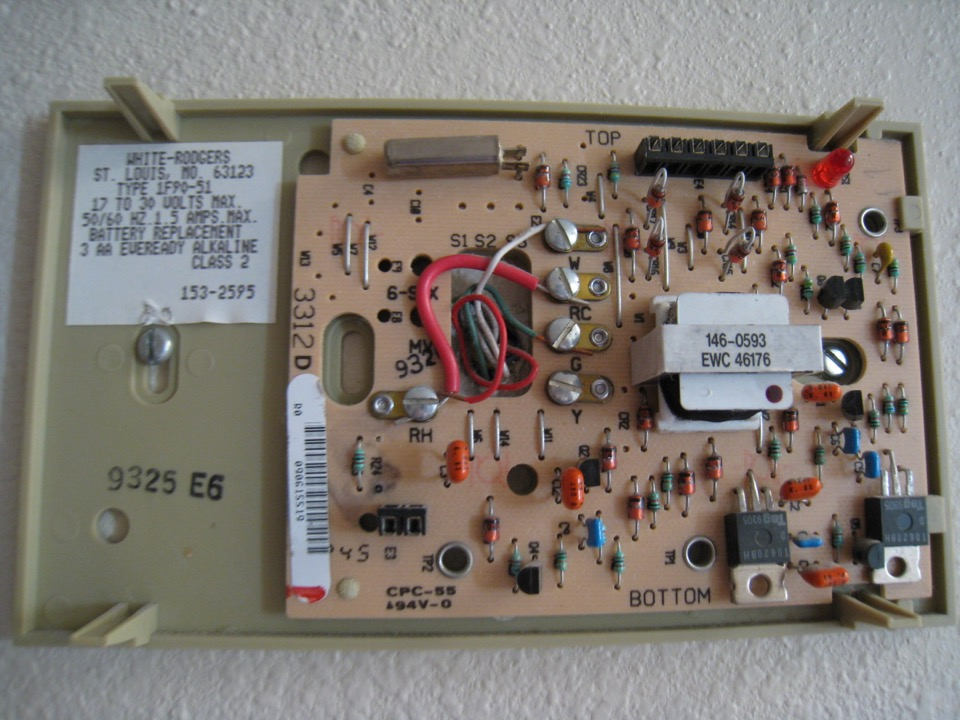

P127
BMS from field installation to platform commissioning
Learn the physical job, signals, HVAC sequences, integration, Niagara, Siemens and other vendor tools, then prove commissioning and handover.
Enter at the physical job
Start with C17 · BMS fieldwork: diagnose and commission a damper and P54 · Mount, label and check a BMS room sensor . Trace the labelled point to its terminal before opening any software. A site helper can contribute mounting, labels, drawings and evidence under supervision. The commissioning role moves into point checks, sequences and defects. C11 · Licences, tickets and pathways in Australia explains the Australian work boundary for electrical and cabling tasks. Use the low-voltage trainers for bench practice.

Fixing screw Cable entry Terminals
With a White-Rodgers thermostat cover removed, the fixing, cable route and terminal screws are visible. Use this photo to recognise the parts of a wall unit. Use the Belimo sheet for this lab’s fixing positions and connections.Photo by Dvortygirl, resized with labels added. Original photo · CC BY-SA 3.0 .
Liquid scale
Follow both legs of this real gauge. Read the two liquid levels against the scale. Their vertical separation gives the pressure difference.Photo by Neurotronix, with on-page callouts. Original photo · CC BY-SA 4.0 .
Watch a room-control mounting demonstration before starting field practice .
Build evidence in six stages
Stage Work through What to keep
1. Get around the equipment Read C01 · BMS fundamentals: what a building management system does , C03 · HVAC for electronics people , P22 · Read a site drawing and label a cable and P54 · Mount, label and check a BMS room sensor . Find one room sensor, duct, damper, valve, fan and panel on a drawing. Photo or mock panel, device tags and marked drawing. 2. Prove wiring and signals Use P63 · Prove a BMS point from the room to the screen , P37 · Calibrate a 4–20 mA pressure input , P77 · Find a fault in a duct pressure measurement , P78 · Prove a heating or cooling valve moves and flows , P79 · Distinguish a fan command from proof of airflow and P80 · Check a room CO₂ sensor against a second meter . Know dry contact, resistance, voltage and current inputs. For each point record terminal, raw quantity, scaled quantity and physical result. 3. Prove what the plant does Run P111 · Commission one complete air-handler sequence , P88 · Find why a VAV box misses its airflow setpoint , P115 · Diagnose a heating-water loop from command, proof and trend and the meter observations in P81 · Check a commercial power meter reading . Functional test of normal start, shutdown, one injected fault and recovery. 4. Locate network and mapping faults Use P19 · Networking hands-on: IP, subnets, switches, PoE, VLANs , P38 · Commission a BACnet room-controller point and P125 · Diagnose a stale or wrongly scaled point across two protocols . Use T56 · Building control sequences, command priorities and point quality for priorities and data quality. Device-to-object point map, values at both ends, timestamps and an integration diagnosis. 5. Work across platforms Complete P112 · Build and commission a Niagara 4 station on a training system and P113 · Trace a Siemens Desigo point from PXC to Desigo CC , then one comparison in P114 · Transfer commissioning skills across four BMS ecosystems . Use the available vendor training environment. Controller and head end map, trend, alarm, documented command release and project backup. 6. Close the job Choose an AHU, VAV and pump-loop case. Rerun their tests with another person checking evidence. Use C12 · Portfolio projects, interviews and a 12-week plan for a portfolio record. Passed and failed checks, who witnessed them, settings restored and items requiring follow-up.
Choose a site family after the common route
Start with air handling and temperature before exploring hydronics, metering, lighting, specialized room equipment and site-specific integrations. Ask which controller family, front end and approved training copy the real building uses. Keep the vendor’s actual wiring and sequence documents beside your worked example.
Related lesson and source material
P111 · Commission one complete air-handler sequence .